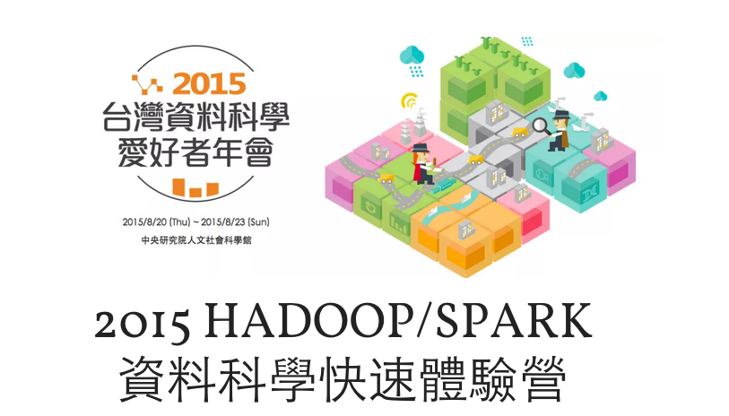
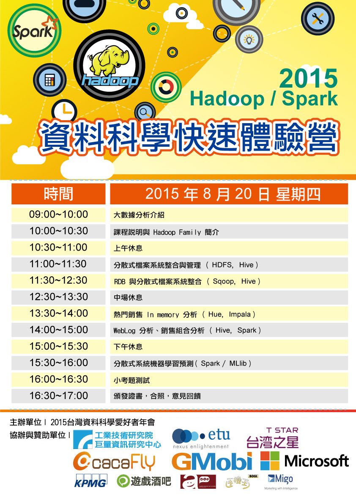
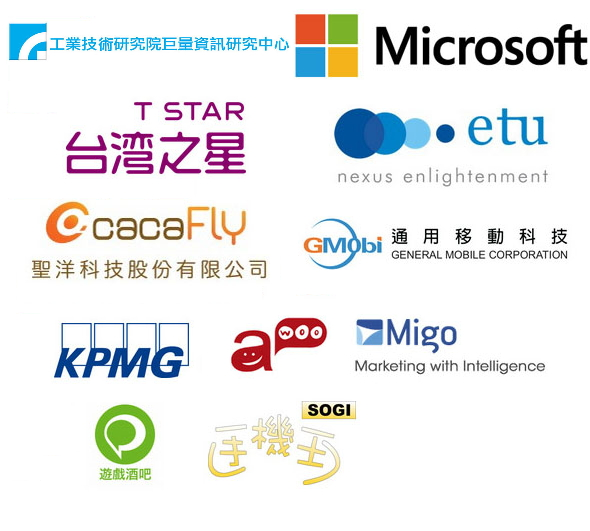
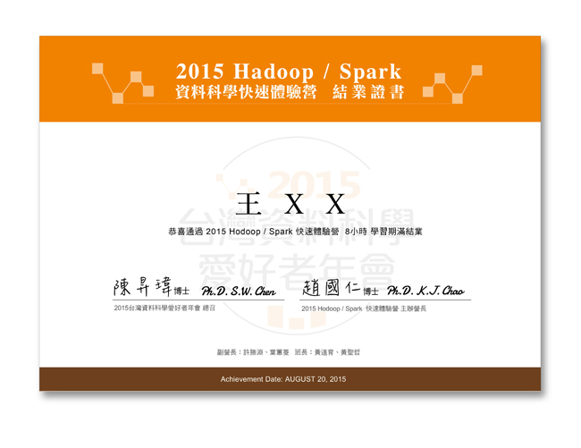

本活動議程表
Hadoop/Spark 資料科學快速體驗營

一、緣由與目標
無可諱言地，相對於先進國家與中國，台灣在大數據的應用與技術上，都已經呈現落後的跡象。究其原因，除了先天上，擁有大數據的單位相對較少之外，更重要的是大數據相關的平台技術能力與應用分析案例與觀念，都還未足夠與普及，面對行動網路與物聯網的全球競爭，無法善用大數據來解決問題，以及創造累積且持續性的競爭優勢。
本課程協助想開始運用巨量數據的企業，或是欲成為資料科學家的有志之士，藉由親自實作各項大數據分析所需技術與工具，能夠很快地了解進行大數據分析相關的實戰技術，快速體驗進入資料科學的領域，開始決勝大數據之路。
二、課程簡介
「2015 Hadoop/Spark 資料科學快速體驗營」是「2015 台灣資料科學愛好者年會」第一次舉辦的主軸活動，適合對於 Hadoop 沒有經驗，但很有興趣學習的學生/社會人士參加。參加本次體驗營，學員都將會親身上機體驗 Hadoop Family 中各項知名的專案，包括 Hadoop、HDFS、Hive、Sqoop、Impala、Hue、Spark/MLlib 以及 Scala 等工具與技術，且為能讓每位學員都能夠有良好的實作體驗，已特別提前舉辦先導幹部班，訓練正式課程所需要的幹部以輔佐學員學習。
課程中透過 AWS EC2 AMI 或其他 VM 範本開啟虛擬機器進行操作，不僅帶給各位 Hadoop Family 的基礎知識，課程中整合下述由淺入深之實作步驟，包含如何將關聯式資料轉換成分散式運算用資料的處理技巧、操作分散式檔案系統、使用終端機及網頁介面之資料查詢工具、運行 Scala 程式、產出分析結果等，建立一個完整的分析解決方案。課程中由講師與助教引導學員運用各項 Hadoop/Spark 專案實作出完整的分析脈絡，激發學員在未來運用 Hadoop/Spark 專案到自己的企業與工作環境之中，更進一步促進學員對巨量資料分析的認識。
全程參加「2015 Hadoop/Spark 資料科學快速體驗營」的學員，將可獲頒結業證書一紙。
三、學員報名基本要求與課程規定
- 未用過 Hadoop Family 相關技術或工具
- 熟悉 Linux 基本指令
- 有程式設計開發經驗
- 熟悉 SQL 語法與應用，例如能了解以下執行結果：
SELECT c.category_name, count(order_item_quantity) as count
FROM order_items oi
INNER JOIN products p ON oi.order_item_product_id = p.product_id INNER
JOIN categories c ON c.category_id = p.product_category_id GROUP BY c.category_name
ORDER BY count desc limit 10; - 本人同意完全遵守主辦單位相關課程要求與規則，如有違反相關授課規則與規定，主辦單位將扣除開銷成本後退回學費與取消上課權利。
- 主辦單位有權利視各種內外在因素考量，提前通知取消開課，並全額退費。
- 以下課程資訊供參考：課程主要在快速體驗與使用Hadoop/Spark，進行資料處理與分析，將使用已經配置好在 AWS 的 EC2 系統或其他VM上機實習，對於 Hadoop/Spark 系統架設與管理不會有太多著墨。
上午課程： Hadoop、HDFS、Hive、Sqoop、Impala、Hue
下午課程：Spark/Scala 資料分析與機器學習 (MLliB)
課前須知
本課程著重於上課中的操作，為了達到最佳的學習效果，請學員參加前做好以下的準備，並自備筆電下載以下工具：
- 連線工具(依作業系統)
- Windows：PuTTY、PuTTYgen (http://www.chiark.greenend.org.uk/~sgtatham/putty/download.html)
- Linux/OSX：使用系統內建終端機或是其他替代工具
- 瀏覽器 (擇一即可)：IE、Chrome、Firefox、Safari、等瀏覽器
四、課程表

五、課程主辦團隊
營長：趙國仁博士 / 東森科技、隆中網絡大數據顧問
創立台灣第一個中文BBS系統、發展全球第一套中文套裝搜索引擎、創立龍捲風科技、曾在國立高雄應用科技大學擔任專任助理教授。有發展文字採礦及行動廣告大數據的經驗，熱愛軟體開發與物聯網創新，獲得20項以上的發明專利，喜歡新創事業商務模式發展、整合性資料分析與探索性研究。
副營長：許勝淵、葉蕙菱
班 長：黃道育、黃聖哲
六、預期效益
- 增進國內學界與業界的知識與技術交流、互動，了解資料科學的應用方式。
- 藉由 Hadoop/Spark 案例實作與討論，進一步了解、扎實完成資料科學分析所需步驟。
- 促進學員對資料科學進一步認識，期望有助學員至各產業促進資料科學之實質應用與成長。
七、協辦與贊助單位

八、結業證書



籌辦單位 | 媒體夥伴 | 工作人員 | 2014 DSC | find us on
© Copyright 2015 - 台灣資料科學愛好者年會